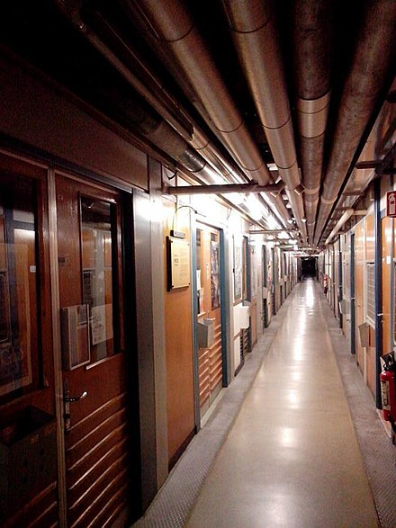

- HTML
- CSS
- JAVASCRIPT
CSS란 무엇인가?
The report covers the massive and critical work that takes place at the Web Consortium toward the growth and strength of the Web, how W3C meets industry needs, and provides updates in key areas, as well as the latest around Web for all and outreach to the world.
We also invite you to read W3C CEO’s thoughts on TPAC2019 –our yearly event where W3C work groups meet face-to-face– held last week in Fukuoka, Japan.
